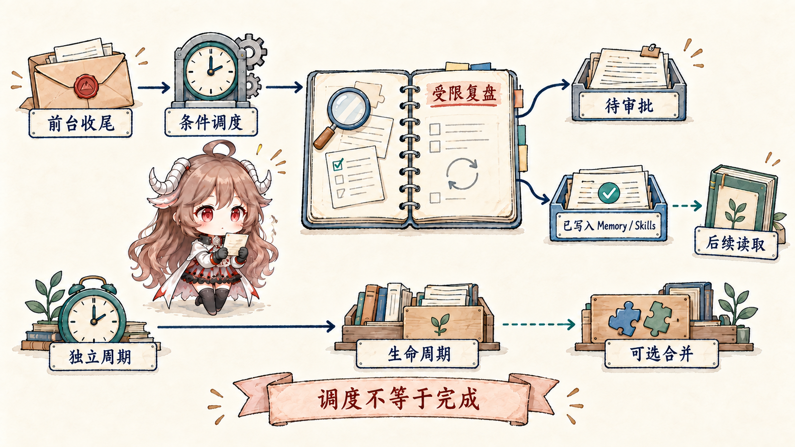
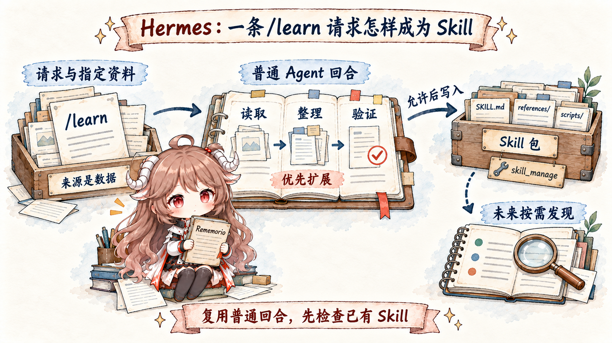
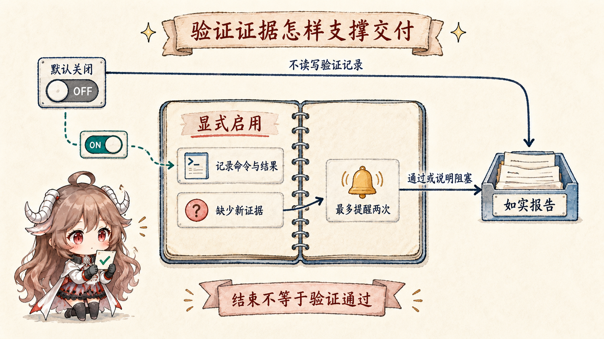

源码阅读 · 七篇路线
Hermes Agent 怎样运行、学习与交付
这组文章一直跟着同一条修复任务：先看一次请求怎样经过模型、工具与状态，再看交付以后怎样提炼经验、生成或改写 Skill，最后用独立证据决定是否采用。
推荐顺序：前四篇建立运行与学习主线，后三篇解释数据怎样分工、能力怎样更新，以及改完以后什么才算真的交付。

阅读路线
从一次任务，走到一套可验证的自进化闭环
每张卡片都是一篇独立正文；系列首页只负责给出顺序和边界。
01 · 任务运行一轮任务如何运行，并把经验留给以后跟着一次修复任务走过模型输入、工具执行、历史保存、多入口运行与后台维护。
阅读第一篇 → 02 · 指令与状态一条信息究竟该放在哪
02 · 指令与状态一条信息究竟该放在哪分清 system prompt、Context、Memory、SessionDB 与 Skill 各自保存什么。
阅读第二篇 →
03 · 运行时学习为什么交付以后才开始自进化看真实任务轨迹怎样在主交付结束后，被后台流程提炼成候选经验。
阅读第三篇 →
04 · Skill 生成一条 /learn 请求怎样变成 Skill追踪显式学习请求怎样收集材料、生成文件并进入可复用能力目录。
阅读第四篇 → 05 · 评测数据训练、验证与留出怎样分工
05 · 评测数据训练、验证与留出怎样分工避免用同一批样本同时出题、改答案和宣布胜利。
阅读第五篇 → 06 · 能力改写DSPy 与 GEPA 怎样改写 Skill
06 · 能力改写DSPy 与 GEPA 怎样改写 Skill比较编译、反思与候选选择，并检查真正接通的实现边界。
阅读第六篇 →
07 · 验证与采用代码改完之后，什么才算真的交付从静态检查、测试、评测、回归与采用条件建立完整证据链。
阅读第七篇 →